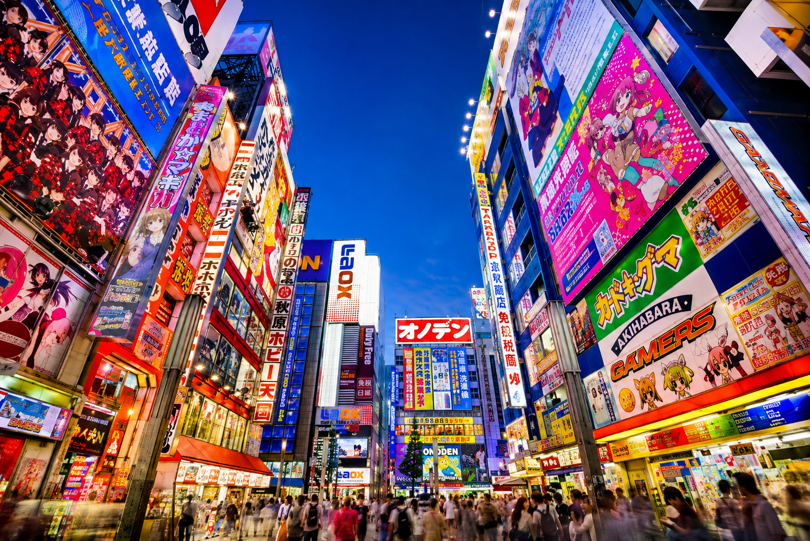
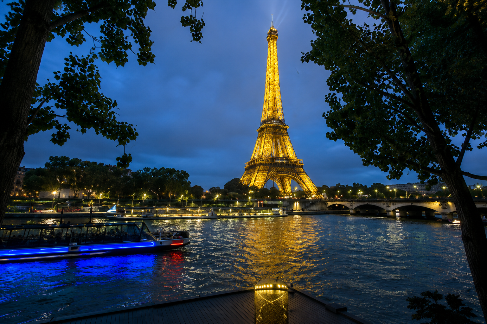
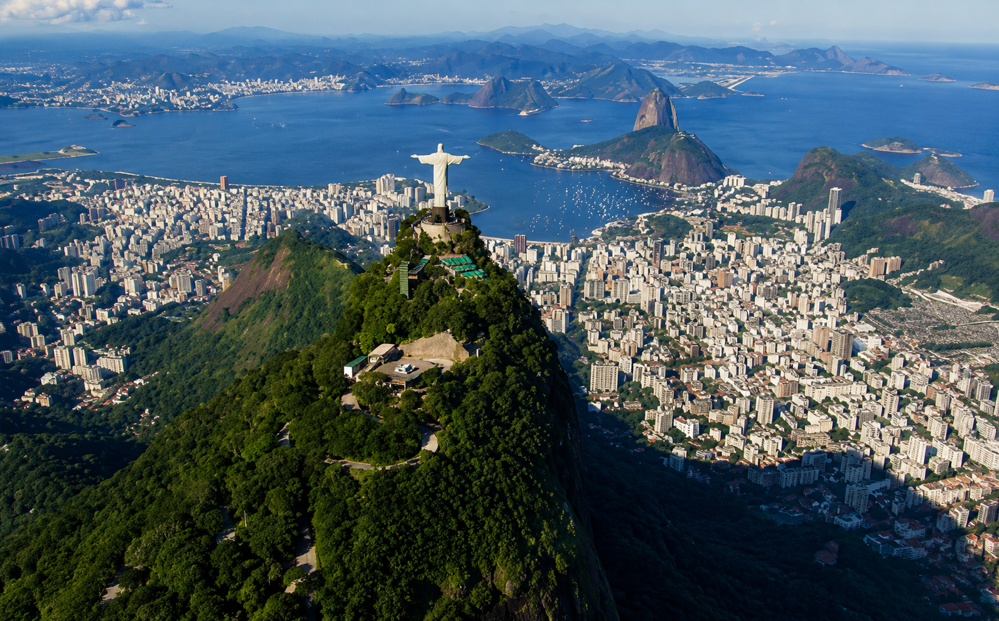

1. Tóquio, Japão

Tóquio é aquele lugar onde o futuro e o passado caminham juntos. De um lado, você tem os letreiros de neon vibrantes e a tecnologia de ponta; do outro, a paz de templos antigos e jardins imperiais. É uma cidade que nunca para e que surpreende em cada esquina, oferecendo uma experiência única que mexe com todos os nossos sentidos.
- Destaque: A maior metrópole do mundo
- O que visitar: Cruzamento de Shibuya e Templo Senso-ji.
Saiba mais no História de Tóquio.
2. Paris, França

Paris vai muito além dos clichês de romance. A "Cidade das Luzes" é um mergulho profundo na história, na arte e na gastronomia. Caminhar por suas ruas é como estar em um museu a céu aberto, onde a Torre Eiffel vigia o horizonte e cada café charmoso convida você a aproveitar a vida sem pressa, no melhor estilo parisiense.
- Destaque: Riqueza cultural, arquitetura icônica e história.
- O que visitar: Museu do Louvre e Bairro de Montmartre.
Explore o site do História de Paris.
3. Rio de Janeiro, Brasil

Não é à toa que o Rio leva o título de "Cidade Maravilhosa". A energia da cidade é contagiante, misturando o verde das montanhas com o azul do mar de um jeito que só o Rio consegue fazer. Do abraço do Cristo Redentor ao pôr do sol nas praias de Copacabana e Ipanema, é um lugar que vibra cultura, música e paisagens de tirar o fôlego.
- Destaque: Praias grandes e o calor.
- O que visitar: Cristo Redentor e Jardim Botânico.
Veja dicas na História do Rio de Janeiro.